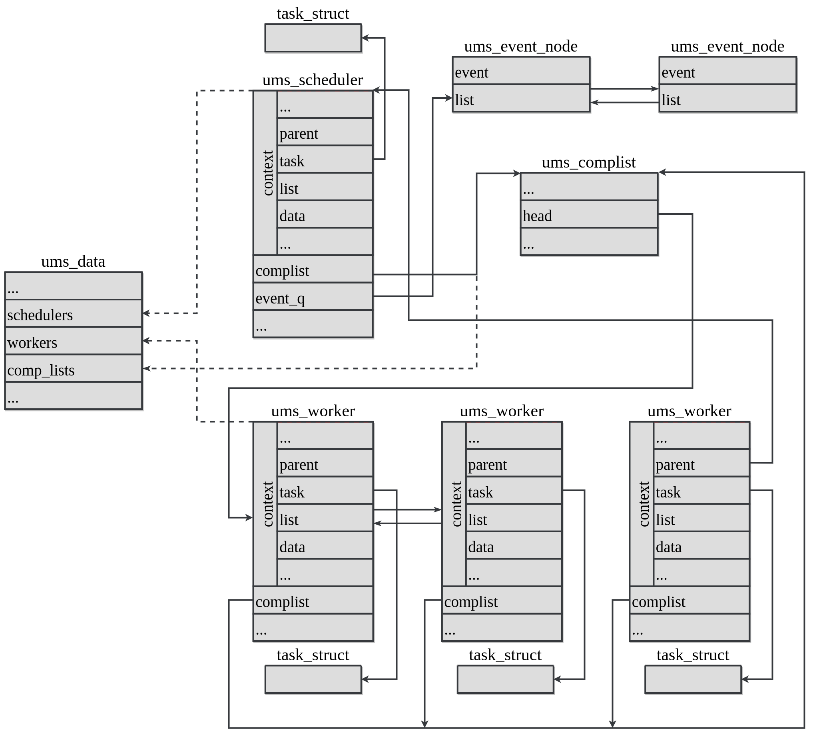

Linux User-Mode Scheduling
v1.0.0
Overview
Building
Userspace library documentation
Kernel module documentation
uAPI
Module internals
Module lifecycle
Module diagram
Core structures and functionalities
UMS Device
UMS Context
UMS Completion List
UMS Scheduler
UMS Worker
Procfs
Tools
Benchmarks
Linux User-Mode Scheduling
»
Kernel module documentation
»
Module internals
»
Module diagram
View page source
Module diagram

The relations between module data structures are depicted as follows:
